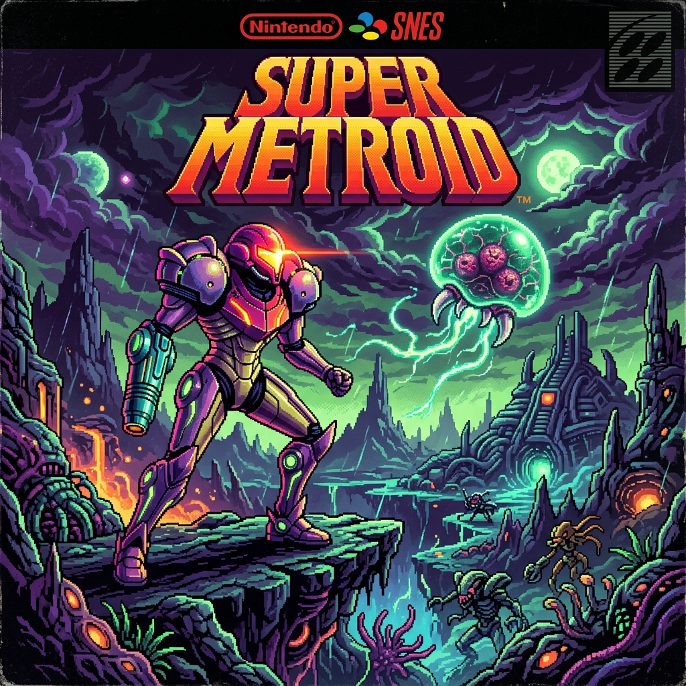

Conecte seu controle USB ou Bluetooth (Xbox 360/One/Series, DualShock, DualSense ou genérico) ao computador. Pressione qualquer botão no controle para que o navegador ative a Gamepad API.
O EmulatorJS possui detecção nativa. Assim que você pressionar os direcionais ou botões, ele responderá diretamente no jogo.
Se quiser mudar a ordem dos botões do controle: